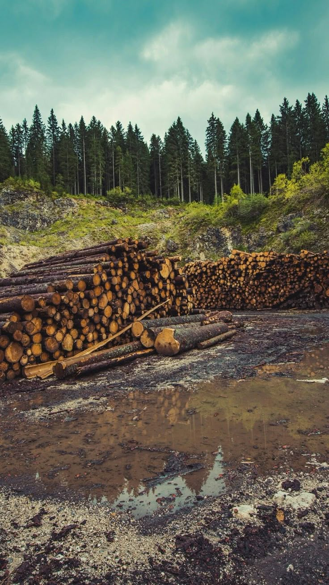
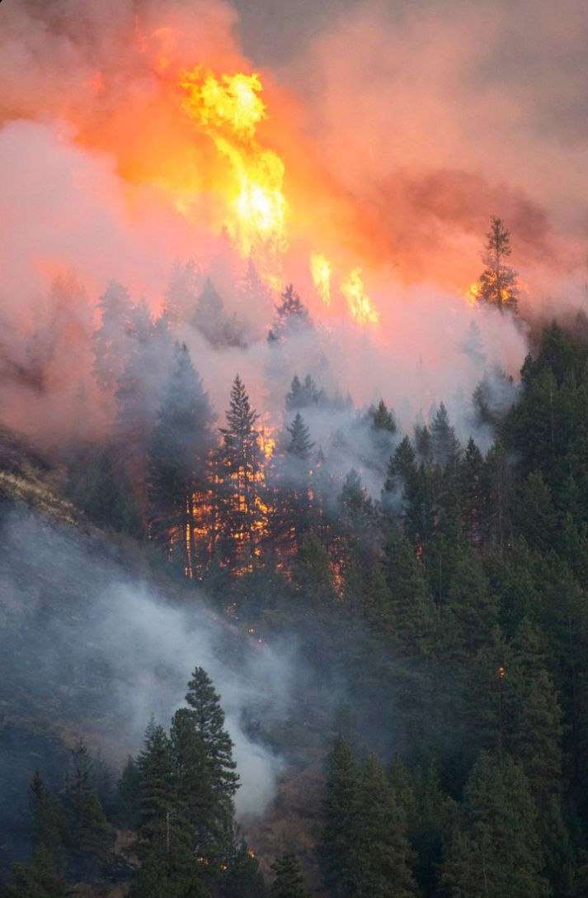
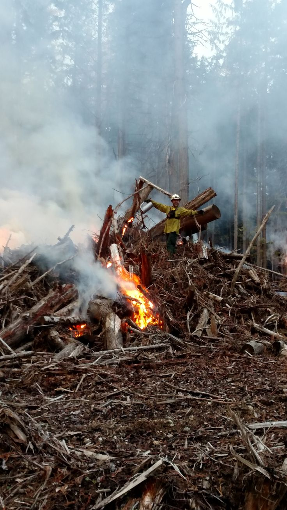

  
🌍 Hutan memiliki peran penting dalam menjaga keseimbangan ekosistem dan menyerap karbon dioksida. Namun, deforestasi yang semakin meningkat akibat ekspansi perkebunan , illegal logging, dan pembangunan infrastruktur mengancam kelestarian lingkungan. Dalam beberapa dekade terakhir, jutaan hektar hutan telah hilang, menyebabkan hilangnya habitat satwa liar, menurunnya kualitas udara, serta terganggunya siklus hidrologi yang dapat menyebabkan bencana seperti banjir dan tanah longsor. ⚠️🏞️
🌴 Selain itu, hutan hujan tropis yang kaya akan keanekaragaman hayati terus berkurang, mengancam kelangsungan hidup banyak spesies flora dan fauna yang hanya bisa ditemukan di daerah tertentu. Kehilangan hutan juga berdampak langsung pada masyarakat adat yang menggantungkan hidupnya pada sumber daya alam dari hutan. Jika tidak ada tindakan nyata untuk melindungi hutan, kita akan kehilangan lebih banyak lagi sumber daya alam yang berharga untuk kehidupan.🌺🪧